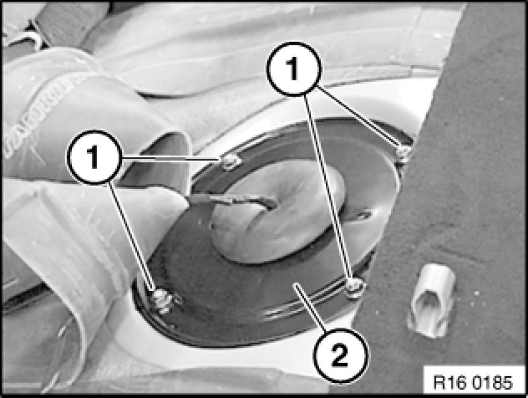
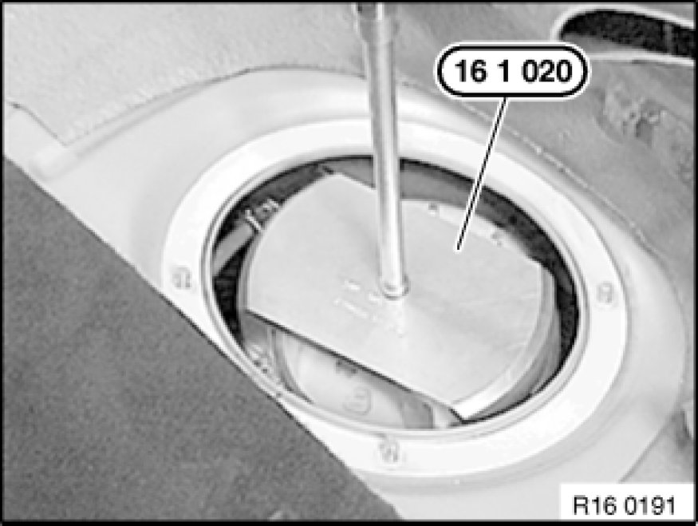
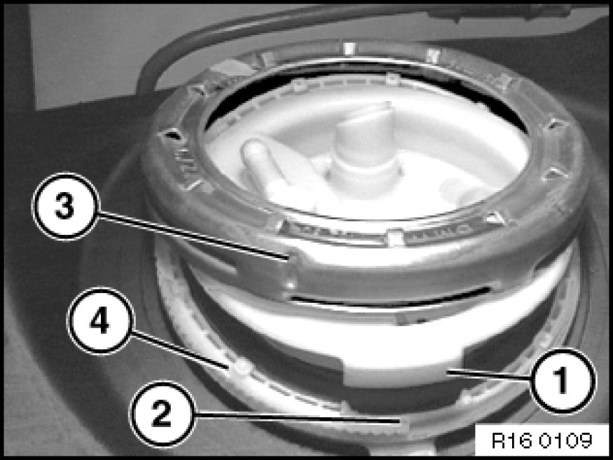
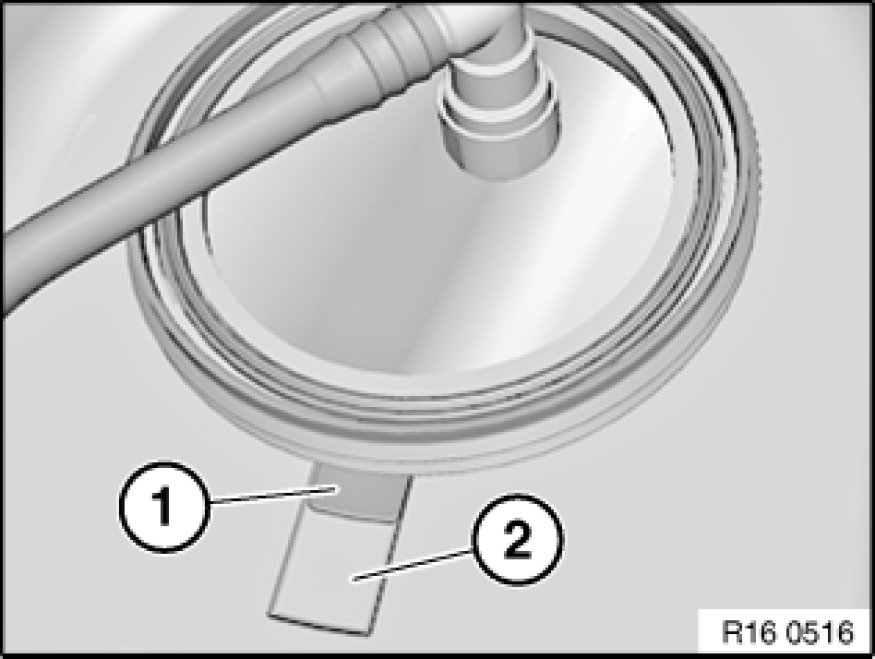
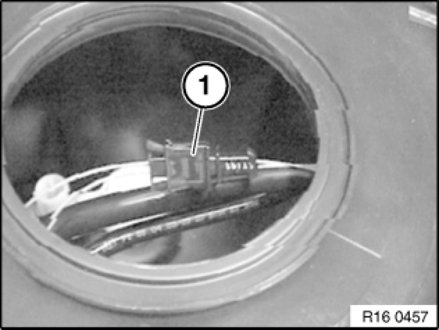
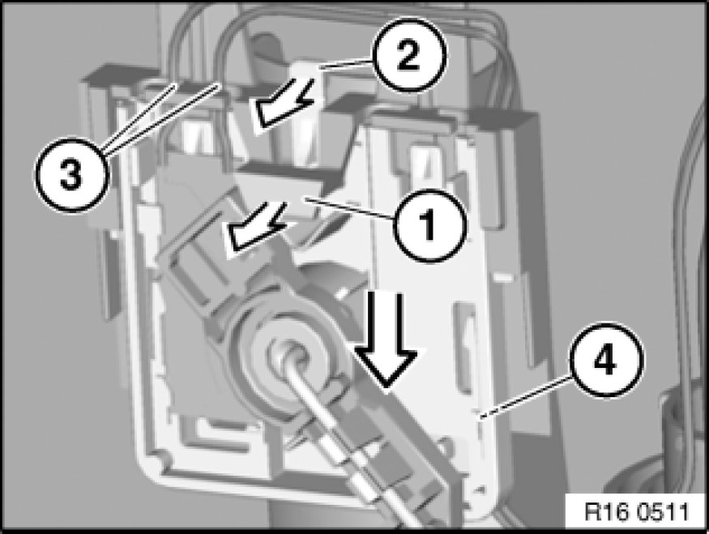
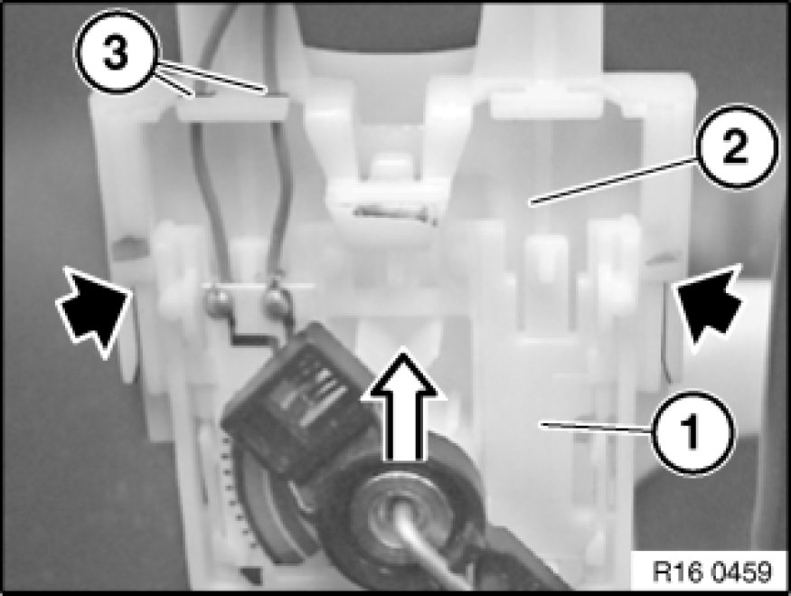
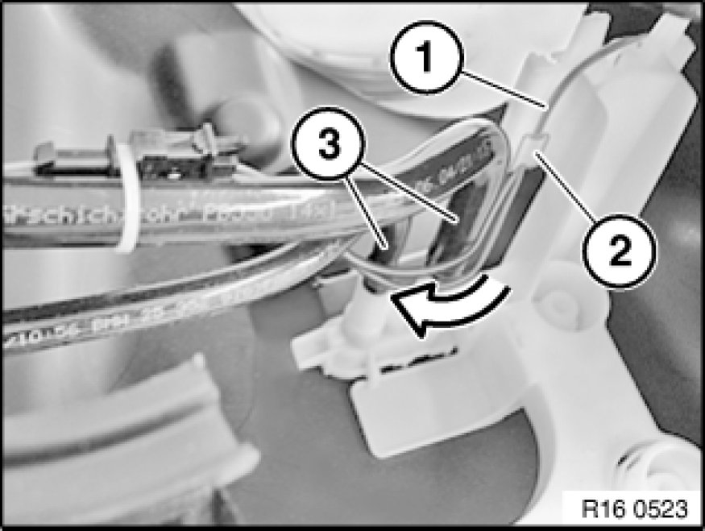

16 12 001 Removing and Installing/Replacing Fuel Gauge Sensor (Left Side)
16 12 001 - Removing and installing or replacing fuel gauge sensor (petrol/gasoline, left)

Special tools required:
- 16 1 020 16 1 020 Pin Wrench

Recycling
Fuel escapes when fuel lines are detached. Have a suitable collecting container ready.
Catch and dispose of escaping fuel.
Observe country-specific waste-disposal regulations.

Important!
Ensure adequate ventilation in the place of work!
Avoid skin contact (wear gloves)!
Ensure absolute cleanliness when working on the open fuel tank.
Contaminants in the fuel tank can impair driving operation or may even result in vehicle breakdown!
Before starting the engine for the first time:
- Fill fuel tank with at least 5 liters of fuel.

Necessary preliminary tasks:
- Draw off fuel from fuel tank Procedures
- Remove rear seat bench Rear Seat, Through-Loading

Release screws (1) and remove cover (2) from left side of fuel tank.

Release screw cap with special tool 16 1 020 16 1 020 Pin Wrench and remove.
Installation:
Tightening torque 16 14 2AZ 16 14 Fuel Pump.

Installation:
Service cap can only be installed in one position.
When installing, make sure lug (1) of service cap engages in corresponding opening on fuel tank.
During torque tightening, notch (3) on screw cap can be clearly heard and felt to engage toothed segment (4) on fuel tank.
Always replace seal (2).

Important!
Make sure that tab (1) of adapter ring lies completely in recess (2).

Disconnect plug (1) from fuel level sensor.

Removing fuel level sensor:
- Disengage cable from guides (3 and 4).
- Carefully pull tab (1) in direction of arrow; at the same time, press tab (2) in direction of arrow and press out fuel level sensor downwards.
Important!
Risk of damage:
Carefully feed cable out of cable guides (3 and 4). Do not kink cable.

Installation:
Observe the following procedure when installing the fuel level sensor.
1. Carefully push fuel level sensor (1) in direction of arrow onto sensor holder (2).
2. Push on fuel level sensor up to end stop. Fuel level sensor must snap audibly into place!
3. Carefully feed cable into cable guide (3). Do not kink cable.
Make sure fuel level sensor is correctly positioned in both guides (see arrow).

Installation:
Engage cable (1) in cable guide (2) and lay behind lines (3).
Cable must not restrict freedom of movement of lever-type sensor!